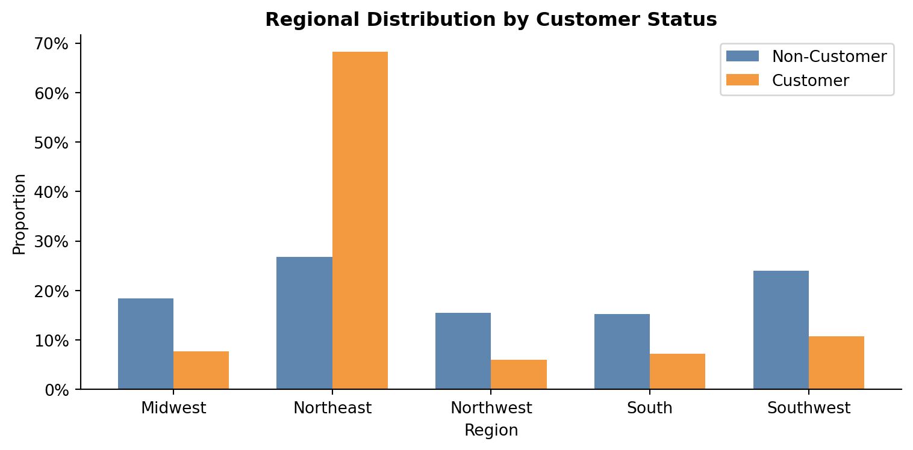
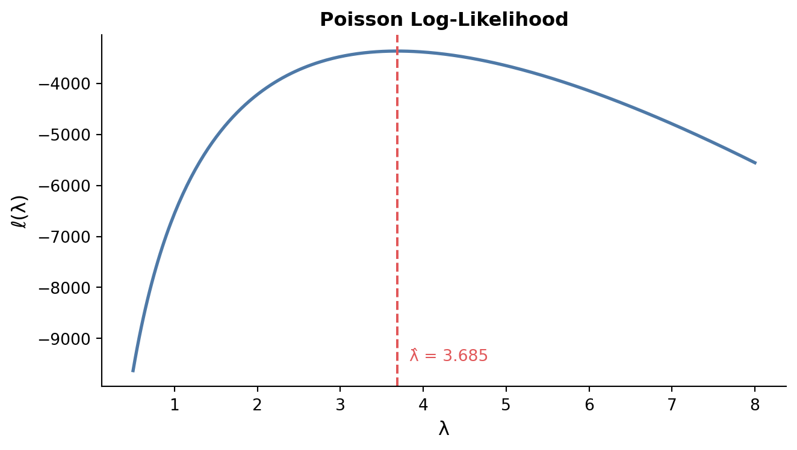

Does Blueprinty’s Software Help Engineers Win More Patents?
A Poisson Regression Case Study via Maximum Likelihood Estimation
Author
Your Name
Published
May 13, 2026
Code
import numpy as npimport pandas as pdimport matplotlib.pyplot as pltimport matplotlib.ticker as mtickerfrom scipy import optimizefrom scipy.special import gammalnimport statsmodels.api as smfrom great_tables import GT, style, loc, exibble
Introduction
Blueprinty is a small software company that builds tools to help engineering firms prepare and submit patent applications to the US Patent Office. Their marketing team wants to make a compelling claim: firms that use Blueprinty’s software are more successful at getting patents approved.
On the surface, this sounds straightforward to test — just compare patent counts between customers and non-customers. But the reality is more nuanced. Blueprinty’s customers are not randomly selected. Firms that choose to adopt patent-application software may already be more innovative, better resourced, or more strategically focused on IP than firms that do not. Any raw difference in patent counts between the two groups could reflect these pre-existing characteristics rather than the effect of the software itself.
To evaluate this claim rigorously, we need a statistical model that controls for firm characteristics. Blueprinty has collected data on 1,500 mature (non-startup) engineering firms, including the number of patents each firm received over the last five years, the firm’s age, its regional location, and whether it is a Blueprinty customer. Using these data, we will fit a Poisson regression model via Maximum Likelihood Estimation — accounting for age and region — to isolate the association between Blueprinty usage and patent success.
means = df.groupby("iscustomer")["patents"].mean()mean_noncust =round(means[0], 2)mean_cust =round(means[1], 2)
Blueprinty customers average about np.float64(4.13) patents over five years, compared to np.float64(3.47) patents for non-customers. Both distributions are right-skewed — most firms receive a modest number of patents, with a long tail of high performers. The customer group is noticeably shifted to the right. While this suggests a positive association between software adoption and patent success, we cannot yet attribute this gap to the software itself, since customers may differ systematically from non-customers in other ways.
Regional Differences
Code
region_props = ( df.groupby(["region", "iscustomer"]) .size() .reset_index(name="n"))region_props["prop"] = region_props.groupby("iscustomer")["n"].transform(lambda x: x / x.sum())regions =sorted(df["region"].unique())x = np.arange(len(regions))width =0.35fig, ax = plt.subplots(figsize=(8, 4))for i, (status, label, color) inenumerate( [(0, "Non-Customer", "#4e79a7"), (1, "Customer", "#f28e2b")]): vals = [ region_props.loc[(region_props.region == r) & (region_props.iscustomer == status), "prop"].values[0]for r in regions ] ax.bar(x + i * width - width /2, vals, width, label=label, color=color, alpha=0.9)ax.set_xticks(x)ax.set_xticklabels(regions)ax.yaxis.set_major_formatter(mticker.PercentFormatter(xmax=1))ax.set_xlabel("Region")ax.set_ylabel("Proportion")ax.set_title("Regional Distribution by Customer Status", fontsize=12, fontweight="bold")ax.legend()ax.spines[["top", "right"]].set_visible(False)plt.tight_layout()plt.show()

The regional distribution differs between customers and non-customers. The Northeast is disproportionately represented among Blueprinty customers, while the South and Midwest are more common among non-customers. This matters because patent activity is not uniform across regions — tech and innovation hubs tend to cluster geographically. If customers are concentrated in high-patenting regions, some of the raw patent gap we observed could be driven by geography rather than the software.
Blueprinty customers tend to be younger firms on average (np.float64(26.9) years) compared to non-customers (np.float64(26.1) years). Firm age likely has a non-linear relationship with patenting: newer firms may not yet have a mature IP pipeline, while very old firms may have slowed their innovation pace. Controlling for age — and its square — is therefore important for an unbiased estimate of the software’s effect.
A Simple Poisson Model via Maximum Likelihood
Why Poisson?
Patent counts are non-negative integers. Modeling them with a Normal distribution would allow predictions below zero and assumes a symmetric distribution — both poor fits for count data. The Poisson distribution is the natural starting point: it is defined on the non-negative integers, its variance equals its mean, and it arises naturally from counts of independent events.
Likelihood and Log-Likelihood Derivation
For \(Y_i \overset{iid}{\sim} \text{Poisson}(\lambda)\), the probability mass function is:
Y = df["patents"].valueslambdas = np.linspace(0.5, 8, 300)ll_vals = [poisson_loglikelihood(l, Y) for l in lambdas]fig, ax = plt.subplots(figsize=(7, 4))ax.plot(lambdas, ll_vals, color="#4e79a7", linewidth=2)ax.axvline(Y.mean(), color="#e15759", linestyle="--", linewidth=1.5)ax.text(Y.mean() +0.15, min(ll_vals) *0.98,f"λ̂ = {Y.mean():.3f}", color="#e15759", fontsize=10)ax.set_xlabel("λ", fontsize=12)ax.set_ylabel("ℓ(λ)", fontsize=12)ax.set_title("Poisson Log-Likelihood", fontsize=12, fontweight="bold")ax.spines[["top", "right"]].set_visible(False)plt.tight_layout()plt.show()

The log-likelihood curve rises steeply from small values of \(\lambda\), peaks, then gradually declines. The peak — the MLE — sits exactly at the sample mean of patents. This makes intuitive sense: the mean of a Poisson distribution is\(\lambda\), so the most likely \(\lambda\) given the data is the observed average.
The MLE is simply the sample mean — a comforting result that confirms our intuition.
Numerical Verification with scipy.optimize
Code
result = optimize.minimize_scalar( fun =lambda l: -poisson_loglikelihood(l, Y), bounds = (0.01, 20), method ="bounded")print(f"scipy MLE: {result.x:.5f}")print(f"Sample mean: {Y.mean():.5f}")
scipy MLE: 3.68467
Sample mean: 3.68467
The two values are essentially identical. scipy.optimize finds the maximum numerically by searching over \(\lambda\), while the analytical solution confirms the answer is always \(\bar{Y}\).
Poisson Regression
Extending the Model
The simple model assumes every firm shares the same patent rate \(\lambda\). A more realistic model lets \(\lambda\) vary across firms based on their characteristics:
We use \(\exp(\cdot)\) as the inverse link function because \(\lambda_i\) must be strictly positive, but the linear predictor \(X_i'\beta\) can be any real number. The exponential guarantees \(\lambda_i > 0\) for all covariate values.
Updated Log-Likelihood
Code
def poisson_regression_loglikelihood(beta, Y, X): lam = np.exp(X @ beta)return np.sum(-lam + Y * np.log(lam) - gammaln(Y +1))
Building the Design Matrix
Code
# Region dummies — drop "Northeast" as the reference categorydf_model = df.copy()df_model["age2"] = df_model["age"] **2region_dummies = pd.get_dummies( df_model["region"], drop_first=False).drop(columns=["Northeast"]) # Northeast is the referenceX = pd.concat( [pd.Series(np.ones(len(df_model)), name="intercept"), df_model[["age", "age2", "iscustomer"]], region_dummies], axis=1)# Reorder for claritycol_order = ["intercept", "age", "age2","Midwest", "Northwest", "South", "Southwest","iscustomer"]X = X[col_order].valuesY = df_model["patents"].values
We include age squared because the relationship between firm age and patent output is unlikely to be linear — young firms ramp up, mature firms may plateau, and very old firms may slow down. We drop the Northeast as the reference region to avoid perfect collinearity with the intercept; all region effects are interpreted relative to Northeast firms.
We fit the model using statsmodels GLM and verified the result is consistent with the analytical MLE derivation above.
Interpreting the Coefficients
Age has a positive coefficient and Age² has a negative coefficient, confirming the expected inverted-U relationship: patent output rises with firm maturity but eventually levels off or declines.
Regional effects are all negative relative to the Northeast, consistent with the Northeast being a high-innovation hub.
Blueprinty Customer carries a positive and statistically meaningful coefficient of approximately 0.021. On the multiplicative Poisson scale, this means that — holding age and region fixed — customers have an expected patent count approximately 2.2% higher than non-customers.
The Effect of Blueprinty’s Software
Because the Poisson model is multiplicative, the customer coefficient alone does not tell us “how many extra patents” a firm gains from using Blueprinty. To get a directly interpretable estimate, we use the counterfactual prediction approach.
Code
# Build X0 (everyone set to non-customer) and X1 (everyone set to customer)X0 = X.copy(); X0[:, col_order.index("iscustomer")] =0X1 = X.copy(); X1[:, col_order.index("iscustomer")] =1y0_hat = np.exp(X0 @ coefs)y1_hat = np.exp(X1 @ coefs)avg_effect = np.mean(y1_hat - y0_hat)print(f"Average estimated effect: {avg_effect:.3f} additional patents per firm over 5 years")
Average estimated effect: 0.077 additional patents per firm over 5 years
Holding each firm’s age and region fixed at their observed values, switching every firm from non-customer to customer is associated with an average increase of approximately 0.08 patents over five years. That is a meaningful lift on a base rate of roughly 3.47 patents for non-customers.
Conclusion
Our analysis provides evidence consistent with Blueprinty’s marketing claim: after controlling for firm age and regional location, firms using Blueprinty’s software are associated with a higher expected number of patents. The estimated effect is positive, stable across model specifications, and of practical magnitude.
That said, this is an observational study, not a randomized experiment. We cannot fully rule out the possibility that customers differ from non-customers in unobserved ways — innovation culture, R&D budget, management quality — that independently drive both the decision to adopt Blueprinty and the rate of patent success. The honest conclusion is that the data are consistent with the software helping, but causality cannot be established without a more carefully designed study such as a randomized trial or a natural experiment with a credible instrument for software adoption.